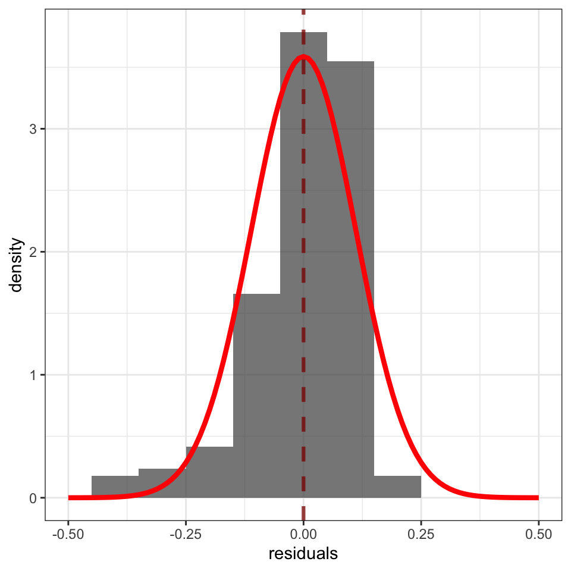

| ResponseId | mean.acc | mean.self | AGE | GENDER | EDUCATION | ETHNICITY | SHIPLEY | HLVA | FACTOR3 | NATIVE.LANGUAGE | study |
|---|---|---|---|---|---|---|---|---|---|---|---|
| R_1lcaBAGJNNI2kju | 1.00 | 7.6 | 18 | Female | Further | White | 31 | 10 | 48 | English | PSYC122 |
| R_AG4jiTm8oxmuOOZ | 0.90 | 7.6 | 18 | Female | Further | White | 35 | 10 | 40 | English | PSYC122 |
| R_2Ckb6YXLPGwYSvg | 0.95 | 7.2 | 18 | Male | Further | Asian | 35 | 9 | 47 | Other | PSYC122 |
| R_27JY5xHHcMs7jGi | 0.90 | 6.8 | 18 | Female | Further | White | 35 | 8 | 52 | English | PSYC122 |
| R_1DtJ4mrOXmxre01 | 0.85 | 6.4 | 19 | Female | Further | White | 33 | 9 | 41 | English | PSYC122 |
| R_PRFQFInzSS6T8e5 | 0.90 | 6.2 | 19 | Female | Further | Mixed | 36 | 5 | 52 | English | PSYC122 |
6 Developing the linear model
Warning
Under construction
6.1 Overview
Welcome to our overview of the materials for our class on developing the linear model in PSYC401 Week 10.
We will continue to locate our learning in the context of the Clearly understood project. We present our PSYC401 lessons in the context of this research project because we think that this context will help you to make sense of the data (as we explain in Chapter 1).
In this chapter, we focus on extending your understanding and skills so that you can apply the linear model analysis approach to a wider range of research questions.
In the context of the Clearly understood project, we frame our analysis concerns and methods in relation to two example research questions:
- What person attributes predict success in understanding?
- Can people accurately evaluate whether they correctly understand written health information?
It will be seen that to answer these research questions, we need to think about how we analyze data when multiple different predictor variables could be included in our model of outcome data, and when these variables may consist of different kinds of observations.
You can read a bit more about the project and the project data in Chapter 1.
6.2 Our learning goals
This week, we build on what we have learnt so far about how we can analyze data to predict data about people (e.g., our attributes) or about the things we make or do. To do this, we will learn to think about and work with linear models.
Our learning objectives: — what are we learning about?
6.2.1 Develop the linear model: our aims
- We will learn how to:
- Extend our capacity to code models so that we can incorporate multiple predictors
- Develop the thought processes required to make decisions about what predictors to include
- Develop the skills required to critically evaluate results
Especially considering potential variation across samples
- We will revise how to:
- Identify and interpret model statistics
- Critically evaluate the results
- Communicate the results
- We will learn how to: explore extensions or generalisations of the linear model
6.3 Learning resources
You will see in the next section links to the lectures we created both to explain the concepts we want to help you to learn about, and to explain the practical data analysis skills we want to help you to develop (Section 6.3.1). We then share links to information about the practical materials we have provided to help you to practise those skills (Section 6.3.2).
All the links to the lecture videos, the lecture slides, and everything you need for your practical work can also be found in the Week 10 files folder on Moodle here
In Section 6.4, we present the lecture slide points.
Tip
6.3.1 Lectures
The lecture material for this week is presented in four short parts. Click on a link and your browser should open a tab showing the Panopto video for the lecture part.
You can download the slides we presented in the lecture in two different formats, depending on what you think will be most useful to you:
- Download the slides exactly as they appear in the lecture from this link. The .html file can be opened and viewed in any web browser (e.g., Chrome, Firefox, Safari).
- Or you can download a printable Word .docx presentation of the slides from this link. The .docx can be opened in Microsoft Word. The figures will not appear exactly as they do in the lecture recording because Word cannot cope with images so well but the trade-off is that you get a document you can print and edit to add notes.
6.3.2 Practical materials
We have collected the practical materials together into a folder.
The folder includes the data file:
2022-12-08_all-studies-subject-scores.csv
and .R code files:
401-lm-dev-how-to.R401-lm-dev-workbook.R
You will use these files for your practical learning.
You can download the .R files and the data .csv files in a single folder, using the link here.
Or you can download the files as individual files from the module Moodle page for PSYC401.
Once you have downloaded the file folder, you will need to upload it to the R-Studio server to access and use the R files.
6.3.2.1 The how-to guide
In the how-to guide:
401-lm-dev-how-to.R
we show you how to do everything you need to do in the practical workbook (see Section 6.3.3). The guide comprises an .R file 401-lm-dev-how-to.R with code and advice.
The code in the .R file was written to work with the data file
2022-12-08_all-studies-subject-scores.csv.
Tip
- Work through the steps in the
how-toguide first, this practice will help you to understand what you need to do for theworkbooktasks. - The
how-toguide and theworkbookhave similar structures. - This is intentional: so that you can copy and adapt code from the
how-toguide to do the practical tasks in theworkbook.
6.3.3 The workbook
In the workbook:
401-lm-dev-workbook.R
you will work with the data file
2022-12-08_all-studies-subject-scores.csv
We split .R scripts into parts, tasks and questions.
For this class on developing the linear model, our practical materials have two aims:
- Helping you to consolidate your learning on how to use linear models to estimate and to visualize the hypothetical association between outcome and predictor variables.
- You will work to code linear models, to identify key statistical information in model outputs, and to interpret and report the results of the models.
- We refresh your learning by working with a data-set you have not encountered before
- We extend your skills by using a new function to generate predictions from fitted models.
- Helping you to learn how to extend your capacity to work with data to answer research questions by developing linear models that include multiple predictor variables.
- We extend your skills by looking at how you work with categorical predictor variables: factors.
- Because factors are so important to research in Psychology, we examine how to code or recode factor levels, and how to visualize the effects on outcomes of differences between factor levels.
To meet these aims, we progress through a series of parts:
- Part 2 shows you how you can read in data and at the same time ensure that different kinds of variables (e.g., factors versus numeric variables) are handled differently by R.
- Part 3 consolidates your learning on how to work with linear models when there is one outcome variable and just one predictor variable. Learning to work with linear models involves not just coding models but also being able to identify and interpret the results of the models you fit.
- Part 5 extends your capacities by helping you to learn how to code linear models that include multiple predictor variables.
- Part 6 builds your understanding of what linear models do, and what model estimates mean, by demonstrating a key point: linear models are coded to fit sample outcome data. When you look at model results, your interpretation is based on how the outcome is predicted to change, on average, given differences in values of one or more predictor variables.
- Part 7 builds your skills by helping you to learn how to code, visualize and interpret the impact on outcomes of the differences between factor levels.
Throughout, we help you to develop skills in calculating and presenting model predictions.
- Parts optional are designed to help you to examine the ways in which the association between variables may, itself, differ between different samples, and to help you to consolidate skills on exporting plots for use in reports.
The activity 401-lm-dev-workbook.R file takes you through the tasks, one by one.
If you are unsure about what you need to do, check the advice in 401-lm-dev-how-to.R.
You will see that you can match a task in the activity to the same task in the how-to. The how-to shows you what function you need and how you should write the function code. You will need to change the names of the data-set or the variables to complete the tasks in the activity.
6.3.4 The data files
The data file we will work with has a similar structure to the structure you have seen before.
Here are what the first few rows in the data file 2022-12-08_all-studies-subject-scores.csv looks like:
There are two new columns:
NATIVE.LANGUAGEself reported language status, whether the participant reports whether they are or are not anative speakerof Englishstudycodes for which study participant data were collected in
You can also see the columns you have seen before:
ResponseIdparticipant codemean.accaverage accuracy of response to questions testing understanding of health guidancemean.selfaverage self-rated accuracy of understanding of health guidancestudyvariable coding for what study the data were collected inAGEage in yearsGENDERgender codeEDUCATIONeducation level codeETHNICITYethnicity (Office National Statistics categories) codeSHIPLEYvocabulary knowledge test scoreHLVAhealth literacy test scoreFACTOR3reading strategy survey score
6.3.5 The answers
After the practical class, you will be able to download the answers version of the workbook here.
The answers version will present my answers for questions, and some extra information where that is helpful.
6.4 Lecture notes
Some people find it easier to read notes than to watch video recordings. This is why we also include the lecture notes here.
6.4.1 Analyze + visualize + present
6.4.2 Develop the linear model: our aims
- We will learn how to:
- Extend our capacity to code models so that we can incorporate multiple predictors
- Develop the thought processes required to make decisions about what predictors to include
- Develop the skills required to critically evaluate results
- Especially considering potential variation across samples
6.4.3 Develop the linear model: our aims
- We will revise how to:
- Identify and interpret model statistics
- Critically evaluate the results
- Communicate the results
- We will learn how to: explore extensions of the linear model
6.4.4 We close the loop: Our context, the health comprehension project
- Because public health impacts depend on giving people information they can understand
- We want to know: What makes it easy or difficult to understand written health information?

6.4.5 We close the loop: Health comprehension project, questions and analyses
- We want to know: What makes it easy or difficult to understand written health information?
- So our research questions are:
- What person attributes predict success in understanding?
- Can people accurately evaluate whether they correctly understand written health information?
6.4.6 Extensions to the linear model: Multiple predictors
- We need only a limited change to R code
- To specify a model with multiple predictors
6.4.7 How we estimate the association between two variables: One outcome and one predictor
- Specify the
lmfunction and the modelmean.acc ~ ... - Specify what data we use
data = all.studies.subjects - Get the results
summary(model)
6.4.8 How we estimate the association between multiple variables: One outcome and multiple predictors
- Specify the
lmfunction and the model:
mean.acc ~ SHIPLEY + HLVA + FACTOR3 + AGE + NATIVE.LANGUAGE
6.4.9 The sentence structure of model code in R
Take a good look:
lm(mean.acc ~ SHIPLEY + HLVA + FACTOR3 + AGE + NATIVE.LANGUAGE, ...)You will see this sentence structure in coding for many different analysis types
method(outcome ~ predictors)predictorscould beSHIPLEY + HLVA + FACTOR3 + AGE + NATIVE.LANGUAGE ...
6.4.10 Extensions to the linear model: Multiple predictors
- We assume that the outcome prediction errors residuals are normally distributed
- We do not assume that the distributions of predictor variables are normal
6.4.11 Revision: What differences between observed and predicted outcome values look like
- Differences between observed and predicted outcomes are shown by the vertical lines – outcome prediction errors: residuals
- Better models should show smaller differences between observed and predicted outcome values
![The figure presents a scatterplot indicating the association between variables mean accuracy (on y-axis) and vocabulary (x-axis) scores. The points are shown in different shades of orange to red, and clustered such that higher vocabulary scores tend to be associated with higher accuracy scores. The predicted trend is indicated by a thick blue line. Predicted outcomes, given different sample values of vocabulary are circled in black along the blue line. Light grey lines indicate the difference between predicted and observed outcomes. The observed points are darker red the further they are from the prediction.](lm-dev_files/figure-html/fig-abline-predict-residuals-1-1.png)
6.4.12 Revision: We typically assume that the residuals are normally distributed
- Some outcome prediction errors – residuals – are positive
- Some residuals are negative
- The average of the residuals will be zero overall

6.4.13 Multiple candidate predictor variables
![The figure presents a grid of scatterplots indicating the association between outcome mean accuracy (on y-axis) and (x-axis) scores on a range of predictor variables. The points are shown in grey, and higher points are associated with higher accuracy scores. The grid includes as predictors: self-rated accuracy; vocabulary (SHIPLEY); health literacy (HLVA); reading strategy (FACTOR3); age (years); gender; education, and ethnicity. The plots indicate that mean accuracy increases with increasing self-rated accuracy, vocabulary, health literacy, and reading strategy scores. Trends are indicated by red lines.](lm-dev_files/figure-html/fig-scatterplot-grid-1.png)
6.4.14 We do not assume normal predictors
![The figure presents a grid of histograms indicating the distribution of (x-axis) scores on a range of predictor variables. The grid includes as predictors: self-rated accuracy; vocabulary (SHIPLEY); health literacy (HLVA); reading strategy (FACTOR3); age (years); gender; education, and ethnicity. The plots indicate: (1.) most self-rated accuracy scores are high (over 6); (2.) many participants with vocabulary scores greater than 30, a few with lower scores; (3.) health literacy scores centered on 8 or some, with lower and higher scores; (4.) a skewed distribution of reading strategy scores, with many around 20-40, and a tail of higher scores; (5.) most participants are 20-40 years of age, some older; (6.) many more female than male participants, very few non-binary reported; (7.) many more participants with higher education than further, very few with secondary; and (8.) many White participants (ONS categories), far fewer Asian or Mixed or Black ethnicity participants.](lm-dev_files/figure-html/fig-histogram-grid-1-1.png)
6.4.15 Extensions to the linear model: Multiple predictors
Tip
We can try to model anything using linear models: that is the real challenge we face
- Any analysis you have learned can instead be done using a linear model: ANOVA, t-test, correlation, \(\chi^2\) test, …
- We can work with any kind of dependent or independent variable you can think of
This is why we need to be careful
6.4.16 Analyses are done in context so when we conduct analyses we must use contextual information
Closing the loop: The health comprehension project questions
- We want to know: What makes it easy or difficult to understand written health information?
- So our research questions include:
- What person attributes predict success in understanding?
6.4.17 We must use contextual information: theory of comprehension
6.4.18 Given theory, model of comprehension accuracy should include measures of
(1.) experience (HLVA, SHIPLEY) and (2.) reasoning ability (reading strategy)
6.4.19 The flexibility and power of linear models requires us to be aware of the garden of forking paths
- Which variables should be included in an analysis?
- All of them; some of them; why?
- Will others disagree with reason?
6.4.20 Different researchers can reasonably make different choices
This is why we care about open science
- Theory- and evidence-based selection of critical variables for analysis \(\rightarrow\) literature review
- Share usable data and analysis code in open repositories \(\rightarrow\) research report exercise, PSYC403 data archiving
6.4.21 Coding, thinking about, and reporting linear models with multiple predictors
lm(mean.acc ~ SHIPLEY + HLVA + FACTOR3 + AGE + NATIVE.LANGUAGE, ...)6.4.22 Coding the linear model with multiple predictors
lm(mean.acc ~ SHIPLEY + HLVA + FACTOR3 + AGE + NATIVE.LANGUAGE, ...)- The code represents a linear model with multiple predictors:
- \(y = \beta_0 + \beta_1x_1 + \beta_2x_2 + \dots + \epsilon\)
6.4.23 Thinking about the linear model with multiple predictors
\(y = \beta_0 + \beta_1x_1 + \beta_2x_2 + \dots + \epsilon\)
Outcome \(y\) is calculated as the sum of:
- The intercept \(\beta_0\) plus
- The product of the coefficient of the effect of e.g.
AGE\(\beta_1\) multiplied by \(x_1\) a person’s age+ +any number of other variables+- The error \(\epsilon\): mismatches between observed and predicted outcomes
6.4.24 Identifying key information in results
Call:
lm(formula = mean.acc ~ SHIPLEY + HLVA + FACTOR3 + AGE + NATIVE.LANGUAGE,
data = all.studies.subjects)
Residuals:
Min 1Q Median 3Q Max
-0.55939 -0.08115 0.02056 0.10633 0.41598
Coefficients:
Estimate Std. Error t value Pr(>|t|)
(Intercept) 0.1873086 0.0472991 3.960 8.47e-05 ***
SHIPLEY 0.0073947 0.0011144 6.635 7.70e-11 ***
HLVA 0.0242787 0.0031769 7.642 9.44e-14 ***
FACTOR3 0.0053455 0.0008947 5.975 4.12e-09 ***
AGE -0.0026434 0.0004905 -5.390 1.05e-07 ***
NATIVE.LANGUAGEOther -0.0900035 0.0141356 -6.367 4.04e-10 ***
---
Signif. codes: 0 '***' 0.001 '**' 0.01 '*' 0.05 '.' 0.1 ' ' 1
Residual standard error: 0.1612 on 555 degrees of freedom
(54 observations deleted due to missingness)
Multiple R-squared: 0.4221, Adjusted R-squared: 0.4169
F-statistic: 81.09 on 5 and 555 DF, p-value: < 2.2e-166.4.25 Identifying key information in results
- The
summary()of the linear model shows: - Estimates of the coefficients of the effects of the predictors we included, with null hypothesis significance tests of those estimates
- Model fit statistics including
R-squaredandF-statisticestimates
6.4.26 For each predictor, e.g. HLVA, we see
Call:
lm(formula = mean.acc ~ SHIPLEY + HLVA + FACTOR3 + AGE + NATIVE.LANGUAGE,
data = all.studies.subjects)
Residuals:
Min 1Q Median 3Q Max
-0.55939 -0.08115 0.02056 0.10633 0.41598
Coefficients:
Estimate Std. Error t value Pr(>|t|)
(Intercept) 0.1873086 0.0472991 3.960 8.47e-05 ***
SHIPLEY 0.0073947 0.0011144 6.635 7.70e-11 ***
HLVA 0.0242787 0.0031769 7.642 9.44e-14 ***
FACTOR3 0.0053455 0.0008947 5.975 4.12e-09 ***
AGE -0.0026434 0.0004905 -5.390 1.05e-07 ***
NATIVE.LANGUAGEOther -0.0900035 0.0141356 -6.367 4.04e-10 ***
---
Signif. codes: 0 '***' 0.001 '**' 0.01 '*' 0.05 '.' 0.1 ' ' 1
Residual standard error: 0.1612 on 555 degrees of freedom
(54 observations deleted due to missingness)
Multiple R-squared: 0.4221, Adjusted R-squared: 0.4169
F-statistic: 81.09 on 5 and 555 DF, p-value: < 2.2e-16- The Coefficient
Estimate:0.0242787for the slope of the effect of variation in HLVA scores - The
Std. Error(standard error)0.0031769for the estimate - The
t valueof7.642and associatedPr(>|t|)p-value9.44e-14for the null hypothesis test of the coefficient
6.4.27 Identifying the key information in the linear model results: Coefficients
Call:
lm(formula = mean.acc ~ SHIPLEY + HLVA + FACTOR3 + AGE + NATIVE.LANGUAGE,
data = all.studies.subjects)
Residuals:
Min 1Q Median 3Q Max
-0.55939 -0.08115 0.02056 0.10633 0.41598
Coefficients:
Estimate Std. Error t value Pr(>|t|)
(Intercept) 0.1873086 0.0472991 3.960 8.47e-05 ***
SHIPLEY 0.0073947 0.0011144 6.635 7.70e-11 ***
HLVA 0.0242787 0.0031769 7.642 9.44e-14 ***
FACTOR3 0.0053455 0.0008947 5.975 4.12e-09 ***
AGE -0.0026434 0.0004905 -5.390 1.05e-07 ***
NATIVE.LANGUAGEOther -0.0900035 0.0141356 -6.367 4.04e-10 ***
---
Signif. codes: 0 '***' 0.001 '**' 0.01 '*' 0.05 '.' 0.1 ' ' 1
Residual standard error: 0.1612 on 555 degrees of freedom
(54 observations deleted due to missingness)
Multiple R-squared: 0.4221, Adjusted R-squared: 0.4169
F-statistic: 81.09 on 5 and 555 DF, p-value: < 2.2e-16- Pay attention to sign and the size of coefficient estimate:
- Is the coefficient (e.g., HLVA
0.0242787) a positive or a negative number? is it relatively large or small?
6.4.28 Identifying the key information in the linear model results: R-squared
Call:
lm(formula = mean.acc ~ SHIPLEY + HLVA + FACTOR3 + AGE + NATIVE.LANGUAGE,
data = all.studies.subjects)
Residuals:
Min 1Q Median 3Q Max
-0.55939 -0.08115 0.02056 0.10633 0.41598
Coefficients:
Estimate Std. Error t value Pr(>|t|)
(Intercept) 0.1873086 0.0472991 3.960 8.47e-05 ***
SHIPLEY 0.0073947 0.0011144 6.635 7.70e-11 ***
HLVA 0.0242787 0.0031769 7.642 9.44e-14 ***
FACTOR3 0.0053455 0.0008947 5.975 4.12e-09 ***
AGE -0.0026434 0.0004905 -5.390 1.05e-07 ***
NATIVE.LANGUAGEOther -0.0900035 0.0141356 -6.367 4.04e-10 ***
---
Signif. codes: 0 '***' 0.001 '**' 0.01 '*' 0.05 '.' 0.1 ' ' 1
Residual standard error: 0.1612 on 555 degrees of freedom
(54 observations deleted due to missingness)
Multiple R-squared: 0.4221, Adjusted R-squared: 0.4169
F-statistic: 81.09 on 5 and 555 DF, p-value: < 2.2e-16- Revision: Pay attention to R-squared
- R-squared indicates how much outcome variation we can predict, given our model
- Revision: we report
Adjusted R-squaredbecause it tends to be more accurate
6.4.29 Identifying the key information in the linear model results: F
Call:
lm(formula = mean.acc ~ SHIPLEY + HLVA + FACTOR3 + AGE + NATIVE.LANGUAGE,
data = all.studies.subjects)
Residuals:
Min 1Q Median 3Q Max
-0.55939 -0.08115 0.02056 0.10633 0.41598
Coefficients:
Estimate Std. Error t value Pr(>|t|)
(Intercept) 0.1873086 0.0472991 3.960 8.47e-05 ***
SHIPLEY 0.0073947 0.0011144 6.635 7.70e-11 ***
HLVA 0.0242787 0.0031769 7.642 9.44e-14 ***
FACTOR3 0.0053455 0.0008947 5.975 4.12e-09 ***
AGE -0.0026434 0.0004905 -5.390 1.05e-07 ***
NATIVE.LANGUAGEOther -0.0900035 0.0141356 -6.367 4.04e-10 ***
---
Signif. codes: 0 '***' 0.001 '**' 0.01 '*' 0.05 '.' 0.1 ' ' 1
Residual standard error: 0.1612 on 555 degrees of freedom
(54 observations deleted due to missingness)
Multiple R-squared: 0.4221, Adjusted R-squared: 0.4169
F-statistic: 81.09 on 5 and 555 DF, p-value: < 2.2e-16- The model summary gives us the F-statistic:
- Revision: the F-test of the null hypothesis that the model does not predict the outcome
6.4.30 Plot predictions to interpret effects
![The figure presents grid of plots showing model predictions, for outcome accuracy, given variation in (a.) age, (b.) vocabulary, (c.) health literacy, (d) reading strategy and (e.) native language. The plots are a series of scatterplots: raw data points are shown in grey; predicted outcome change, given variation on predictors, are indicated by a red line. The plots indicate that accuracy of comprehension is predicted to increase given increase in voccabulary, health literacy, and reading strategy. Native speakers of English are predicted to show greater accuracy than speakers of English as another language. Older participants are predicted to show lower levels of accuracy.](lm-dev_files/figure-html/fig-marginal-effects-plots-1-1.png)
6.4.31 Compare estimates with effects plots
![The figure presents grid of plots showing model predictions, for outcome accuracy, given variation in (a.) age, (b.) vocabulary, (c.) health literacy, (d) reading strategy and (e.) native language. The plots are a series of scatterplots: raw data points are shown in grey; predicted outcome change, given variation on predictors, are indicated by a red line. The plots indicate that accuracy of comprehension is predicted to increase given increase in voccabulary, health literacy, and reading strategy. Native speakers of English are predicted to show greater accuracy than speakers of English as another language. Older participants are predicted to show lower levels of accuracy.](lm-dev_files/figure-html/unnamed-chunk-20-1.png)
- Coefficients estimates in the summary match what we see
- Positive coefficients show upward slopes
- Larger coefficients show steeper slopes
6.4.32 The language and style of reporting linear model results
We fitted a linear model with mean comprehension accuracy as the outcome and, as predictors: vocabulary knowledge (Shipley), health literacy (HLVA), reading strategy (FACTOR3), age (years) and native language status. Our analysis indicated significant effects of all predictor variables. The model is significant overall, with \(F(5, 555) = 81.09, p < .001\), and explains 42% of variance (\(\text{adjusted } R^2 = 0.42\)). The model estimates showed that the accuracy of comprehension increased with higher levels of participant vocabulary knowledge (\(\beta = .007, t = 6.64, p <.001\)), health literacy (\(\beta = .024, t = 7.64, p <.001\)), and reading strategy (\(\beta = .005, t = 5.98, p = < .001\)). Younger participants (\(\beta = -0.003, t = -5.39, p <.001\)) and native speakers of English as another language (\(\beta = -.090, t = -6.37, p <.001\)) tended to show lower levels of accuracy.
6.4.33 Look at what we do with the text
We fitted a linear model with mean comprehension accuracy as the outcome and, as predictors: vocabulary knowledge (Shipley), health literacy (HLVA), reading strategy (FACTOR3), age (years) and native language status. Our analysis indicated significant effects of all predictor variables. The model is significant overall, with \(F(5, 555) = 81.09, p < .001\), and explains 42% of variance (\(\text{adjusted } R^2 = 0.42\)). The model estimates showed that the accuracy of comprehension increased with higher levels of participant vocabulary knowledge (\(\beta = .007, t = 6.64, p <.001\)), health literacy (\(\beta = .024, t = 7.64, p <.001\)), and reading strategy (\(\beta = .005, t = 5.98, p = < .001\)). Younger participants (\(\beta = -0.003, t = -5.39, p <.001\)) and native speakers of English as another language (\(\beta = -.090, t = -6.37, p <.001\)) tended to show lower levels of accuracy.
- Explain: the method (linear model); the outcome (accuracy) and the predictors
- Report the model fit statistics overall (\(F, R^2\))
- Report the significant effects (\(\beta, t, p\)) and describe the nature of the effects
6.4.34 Critically evaluating the results of analyses involving linear models
There are three levels of uncertainty when we look at sample data (mcelreath2020?) – uncertainty over:
- The nature of the expected change in outcome
- The ways that expected changes might vary between individual participants or between groups of participants
- The random ways that specific responses can be produced
6.4.35 Critically evaluating the results of analyses involving linear models
- These uncertainties require us to carefully qualify the conclusions we draw from data analyses
- This does not mean we should avoid causal language when we think that psychological processes cause the behaviours we examine (Grosz2020?)
- But it does mean we can be careful to identify the limits in the evidence we analyse
6.4.36 Revision: As we move into thinking about the data analysis, we need to identify our assumptions
- validity: that differences in knowledge or ability cause differences in test scores
- measurement: that this is equally true across the different kinds of people we tested
- generalizability: that the sample of people we recruited resembles the population
6.4.37 How do you do this work?
- validity
- We want to work with valid measures but validity requires explaining (Borsboom et al., 2004):
- Does the thing exist in the world?
- Is variation in that thing be reflected in variation in our measurement?
- What you can do: literature review \(\rightarrow\) to identify your reasoning in answer to these questions
6.4.38 How do you do this work?
- measurement
- generalizability
- It is most helpful to assume from the start that effects estimates will vary (Gelman, 2015; Vasishth & Gelman, 2021)
- So then we ask ourselves: will this test work in the same way in different groups?
- And we ask: how will these effects estimates vary across different groups
6.4.39 Why we need replication studies
![The figure presents a grid of scatterplots indicating the association between variables mean accuracy (on y-axis) and vocabulary (x-axis) scores. The points are shown in grey, and clustered such that higher vocabulary scores tend to be associated with higher accuracy scores. The trend is indicated by a thick red line. Each plot in the grid represents the pattern for data from one of eight studies. The scatter of points and the steepness if not the direction of the trend clearly varies between studies.](lm-dev_files/figure-html/fig-scatterplot-facet-2-1.png)
6.4.40 Why we need replication studies
![The figure presents a grid of scatterplots indicating the association between variables mean accuracy (on y-axis) and vocabulary (x-axis) scores. The points are shown in grey, and clustered such that higher vocabulary scores tend to be associated with higher accuracy scores. The trend is indicated by a thick red line. Each plot in the grid represents the pattern for data from one of eight studies. The scatter of points and the steepness if not the direction of the trend clearly varies between studies.](lm-dev_files/figure-html/fig-scatterplot-facet-3-1.png)
6.4.41 Why we need to consider the generalizability of sample data
![The figure presents a grid of plots indicating the distribution of (x-axis) scores on a range of predictor variables. The grid includes as predictors: age (years); gender; education, and ethnicity. The plots indicate: most participants are 20-40 years of age, some older; many more female than male participants, very few non-binary reported; many more participants with higher education than further, very few with secondary; and many White participants (ONS categories), far fewer Asian or Mixed or Black ethnicity participants.](lm-dev_files/figure-html/fig-factor-counts-grid-1.png)
6.4.42 Convenience samples are common in Psychology
- We test who we can – convenience sampling – and who we can test has an impact on the quality of evidence (Bornstein et al., 2013)
- If age, ethnicity or gender are not balanced \(\rightarrow\) does this matter to your research question?
- If samples are limited in size \(\rightarrow\) how does that affect our uncertainty over effects estimates?
6.4.43 The linear model is very flexible, powerful and general
- Most introductory statistics classes teach each statistical test as if they are independent
Tip
Most common statistical tests are special cases of linear models, or are close approximations
6.4.44 The t-test as linear model
\(y_i = \beta_0 + \beta_1X\)
- If you have two groups, with a variable
Xcoding for group membership - Then the mean outcome for one group \(= \beta_0\)
- The estimate of the slope \(\beta_1\) tells about the average difference between groups
- And we can code the model like this:
lm(y ~ group)
6.4.45 ANOVA as linear model
\(y_i = \beta_0 + \beta_1X + \beta_2Z + \beta_3XZ\)
- If you have a 2 x 2 factorial design, with two factors
factor.1, factor.2, and a dataset with variablesX, Zcoding for group membership - Then the mean outcome for baseline conditions \(= \beta_0\)
- The estimates of the slopes \(\beta_1, \beta_2\) tells about the average difference between groups
- The estimate of the slope \(\beta_3\) tells us about the interaction
- And we can code the model like this:
lm(y ~ factor.1*factor.2) - Or this
Anova(aov(y ~ factor.1*factor.2, data), type='II')
6.4.46 ANOVA as linear model
- In general, the psychological literature is full of ANOVA
- But the field is moving away from ANOVA towards mixed-effects models
Tip
We have to make choices in teaching and, here, we are choosing to focus on a powerful, flexible, and generally applicable method we can explain in depth: linear models
- Our aim is for students to better understand how to use a general approach
6.4.47 Extensions to the linear model
\(outcome ~ predictors + error\)
outcomecan generalize to analyse data that are not metric, do not come from normal distributionspredictorscan be curvilinear, categorical, involve interactionserrorcan be independent; can be non-independent
6.4.48 Look ahead: extensions to the linear model
- What if the outcome measurement data cannot be understood to be metric or to come from a normal probability distribution?
6.4.49 Extensions to the linear model – binary or dichotomous outcomes
- Binary outcomes are very common in Psychology: yes or no; correct or incorrect; left or right visual field etc.
- The change in coding is e.g.
glm(ratings ~ predictors, family = "binomial")
6.4.50 Extensions to the linear model – ordinal outcomes
- Likert scale or ratings data are best analysed using ordinal models (Liddell & Kruschke, 2018)
- The change in coding [Christensen (n.d.)] is e.g.
clm(ratings ~ predictors)
6.4.51 Extensions to the linear model – non-independence of observations
- Much – maybe most – psychological data are collected in ways that guarantee the non-independence of observations
- We test children in classes, patients in clinics, individuals in regions
- We test participants in multiple trials in an experiment, recording responses to multiple stimuli
- These data should be analysed using linear mixed-effects models (Meteyard & Davies, 2020)
6.4.52 General advice
An old saying goes:
All models are wrong but some are useful
(attributed to George Box).
Tip
- Sometimes, it can be useful to adopt a simpler approach as a way to approximate get closer to better methods
- Box also advises “Since all models are wrong the scientist must be alert to what is importantly wrong. It is inappropriate to be concerned about mice when there are tigers abroad.”
- Here, we focus on validity, measurement, generalizability and critical thinking
6.4.53 Summary
- Linear models
- Linear models are a very general, flexible, and powerful analysis method
- We can use assuming that prediction outcomes (residuals) are normally distributed
- With potentially multiple predictor variables
- Thinking about linear models
- Closing the loop: when we plan an analysis we should try to use contextual information – theory and measurement understanding – to specify our model
- Closing the loop: when we critically evaluate our or others’ findings, we should consider validity, measurement, and generalizability
- Reporting linear models
- When we report an analysis, we should report:
- Explain what I did, specifying the method (linear model), the outcome variable (accuracy) and the predictor variables (health literacy, reading strategy, reading skill and vocabulary)
- Report the model fit statistics overall (\(F, R^2\))
- Report the significant effects (\(\beta, t, p\)) and describe the nature of the effects (does the outcome increase or decrease?)